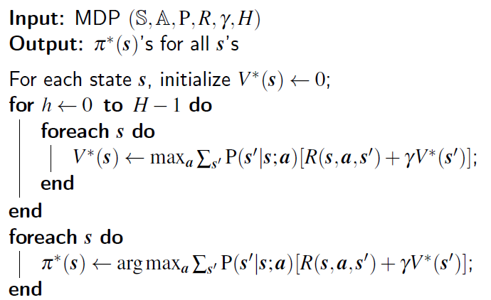
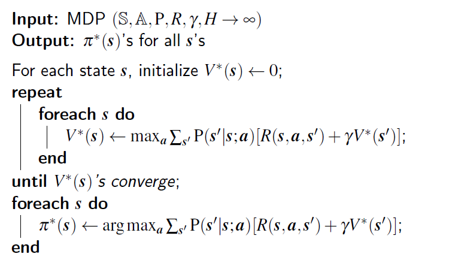
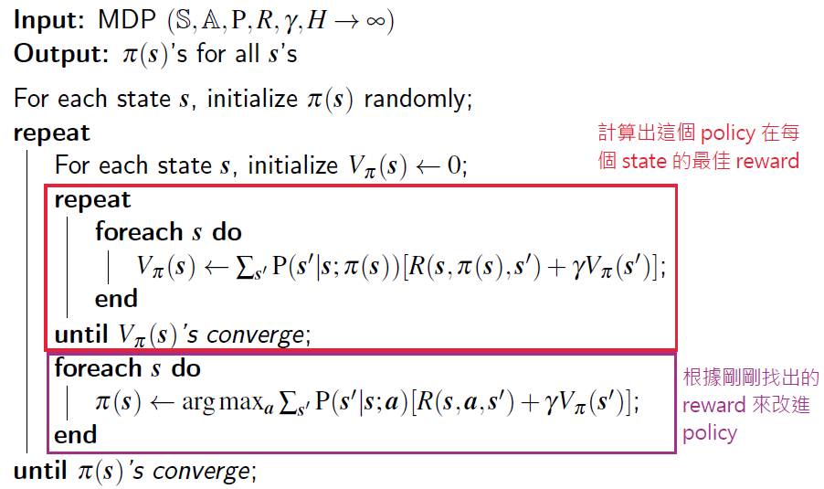

上一篇說明了 Reinforcement Learning (簡稱 RL) 的目標，以及 RL 通常會假設問題符合 Markov Decision Process (簡稱 MDP) 的特性，這篇則說明如何在 MDP 的假設下找出最佳的 policy。
解法一：Value Iteration
主要概念
首先想辦法計算出每個 state 出發能得到的最佳總報酬 (total reward)，將之記錄起來。接著再找出每個 state 上做哪個 action 得到的 total reward 最高。如此一來就能知道在每個 state 時該做甚麼 action，這就是最佳的 policy。
概念說明與推導 (假設最大走 H 步)
首先我們先定義從一個 state $s$ 出發之後，依照一個 policy $\pi$ 走 $h$ 步能夠拿到的 total reward：
$$
V_\pi^{(h)}(s) = E_{s^{(1)},…,s^{(h)}}(\sum^h_{t=0}\gamma^t R(s^{(t)}, \pi(s^{(t)}), s^{(t+1)}) | s^{(0)} = s;\pi)
$$
這個式子跟第一份筆記最後的式子基本上是一樣的，只是我們多指定 initial state 為 $s$。而這個式子我們稱作 Value Function。Value 的意思就是預期的 total reward。
Value Iteration 的第一個目標是找出給從一個 state $s$ 出發，能夠得到的最佳 total reward：
$$
V^{*(h)}(s) = \max_\pi E_{s^{(1)},…,s^{(h)}}(\sum^h_{t=0}\gamma^t R(s^{(t)}, \pi(s^{(t)}), s^{(t+1)}) | s^{(0)} = s;\pi)
$$
此式子叫做 Optimal Value Function。
而所謂的最佳 policy (標記為 $\pi^*$) 其實就是在每一個 state $s$ 選擇一個會帶來最大 total reward 的 action $a$，也就是可以寫成下列式子：
$$
\pi^*(s) = \arg \max_a \sum_{s’} P(s’|s;a) [R(s,a,s’) + \gamma V^{*(H-1)}(s’)]
$$
注意上面這個式子假設我們已經知道了每一個 state 出發走 $H-1$ 步之後的 total reward。所以為了要能夠解出上述式子，我們必須要先知道 $V^{*(H-1)}(s’)$ 是多少。也就是要先算出下面式子：
$$
V^{*(H-1)}(s’) = \max_a \sum_{s’'} P(s’'|s’;a) [R(s’,a,s’') + \gamma V^{*(H-2)}(s’')]
$$
看到這邊應該有點感覺了，可以發現要解出每一個步的最佳 total reward 要先得到上一步的最佳 total reward，直到第 0 步為止。這其實符合 dynamic programming 的概念：「一個問題的 optimal solution 可以從他的子問題的 optimal solution 得到」。因此 optimal value function 可以使用 dynamic programming 來計算。
Algorithm (假設最大走 H 步)

圖一、Value Iteration 的 Pseudo Code
圖一展示了 Value Iteration 的實作方式，大致分成兩塊，第一塊建立一個 mapping，該 mapping 告訴我們一個 state 出發走 $H-1$ 步最佳的 total reward 是多少。建立的方式就是我先算第一步每一個 state 的 total reward 會是多少，然後再算第二步，再算第三步…直到算到第 $H-1$ 步為止，也就是 dynamic programming。第二塊則是建立在這個基礎上找出最佳的 policy，也就是每個 state 該做甚麼動作。
推導 (無限步數)
接下來來考慮 $H \rightarrow \infty$ 的情況。
若我們不限制步數，也就是可以走無限步的話，optimal value function 就變成：
$$
V^{*}(s) = \max_a \sum_{s’} P(s’|s;a) [R(s,a,s’) + \gamma V^{*}(s’)]
$$
這個式子跟有限步數的式子基本相同，只差在計算時不需要考慮走幾步。因為每一個 state 出發的最佳 total reward (或稱為 optimal value) 在走了無限步之後都會收斂到一個值 (這個應該還算直覺，因為有 discount factor $\gamma$ 的存在)。這個遞迴的式子太有名，所以有個名字：Bellman Optimality Equation。
在無限步的情況下找 policy 的方法仍相同，就是對每個 state 找可以得到 optimal value 的 action。
不過此時得到的 policy 就有幾個特性：
- Stationary：每個 state 的最佳 action 不隨時間改變。
- Memoryless：每個 state 的最佳 action 跟起始狀態 $s^{(0)}$ 無關。
Algorithm (無限步數)

圖二、Value Iteration (無限步數) 的 Pseudo Code
這個 algorithm 跟前一個最主要的不同就在於，他把 H 步的 for loop 用一個無限 loop 替代，直到 optimal value 沒有變化為止。
仔細想想可以發現好像很難說這個方法會收斂，不過事實上可以用數學證明會收斂，因此這邊就不探討。
解法二：Policy Iteration
主要概念
先隨便亂用一個 policy (以 2D 迷宮來說就是設定全部往右走之類的) 試試看，然後根據得到的 reward 來改進 policy 以增加預期獲得的 total reward。再重複拿新的 policy 嘗試並改進 policy。直到 policy 沒有改變為止。
這種做法比較像是人類找最佳策略的做法。
概念說明與推導
因為 policy iteration 的概念是要一直不斷嘗試直到 converge，因此就不考慮有限步數 $H$ 的情況。
首先我們知道給定一個 policy $\pi$，可以得到的預期總報酬 (expected total reward，或叫做 value) 可以用 value function 表示：
$$
V_\pi(s) = E_{s^{(1)},…}(\sum^\infty_{t=0}\gamma^t R(s^{(t)}, \pi(s^{(t)}), s^{(t+1)}) | s^{(0)} = s;\pi)
$$
那我們要怎麼找到最好的 policy 呢？
這要分成兩個步驟：
- 先找出該 policy 可以得到的預期總報酬是多少
- 改進 policy 以提高預期總報酬
首先 value function 的式子 $V_\pi(s)$ 也跟 Value Iteration 無限步數的情況相同，可以寫成遞迴形式：
$$
V_\pi(s) = \sum_{s’} P(s’|s;\pi(s)) [R(s,\pi(s),s’) + \gamma V_\pi(s’)]
$$
這個式子也非常有名，叫做 Bellman Expectation Equation。這個式子跟 Bellman Optimality Equation 有兩個差異：
- Policy $\pi$ 已經指定
- 沒有 $\max$
知道這個遞迴式之後，有兩種方式可以解這個式子：
- 解聯立方程式：因為這個式子只有 $V_\pi(s)$ 是未知的，而 $V_\pi(s)$ 的值有 $|\mathbb{S}|$ 種，然後式子剛好也有 $|\mathbb{S}|$ 個，所以可以解聯立方程式。時間複雜度 $|\mathbb{S}|^3$。
- 跟 Value Iteration 一樣，用 DP 跑到收斂為止。
Policy Iteration 採用的就是第二種解法，因為實際上跑比較快。
那現在完成第一個步驟，也就是找出一個 policy 的預期總報酬之後，要如何改進 policy 呢？只要根據以下的式子更新 policy 就好：
$$
\hat\pi(s) = \arg\max_a\sum_{s’} P(s’|s;a) [R(s,a,s’) + \gamma V_\pi(s’)]
$$
講白話點就是，假設我們在 state $s$，因為我們知道每一個 action 之後到達的下一個 state $s’$ 持續用原本的 policy $\pi$ 的預期總報酬，所以我們就可以依此挑選一個帶來最大總報酬的 action $a$，並把這個新的策略記為 $\hat\pi(s)$。
這個式子可以經由數學證明每次計算都可以得到更好或是至少不會變爛的 policy，證明的部分就省略。
Algorithm

圖三、Policy Iteration 的 Pseudo Code
圖三展示了上述概念的實作方式。
這兩種做法的不足之處
然而，現實世界並不如大家所想的容易。
實際上我們很難得知 $P(s’|s;a)$ 到底是多少，像是吃角子老虎機不會告訴你拉一次轉換到中獎的機率有多少。
因此下一份筆記將會解釋如何在不知道 $P(s’|s;a)$ 的情況下找最佳 policy，也就是所謂的 Model-free RL。
參考資料
以上筆記為我看清華大學資訊工程學系的吳尚鴻教授的 CS565600 深度學習課程第 16 課，再轉化成我的理解記錄下來，有興趣的人可以直接看課程：